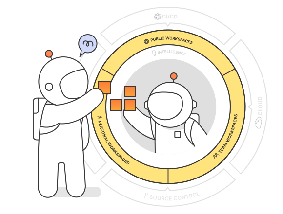
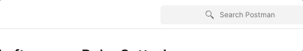
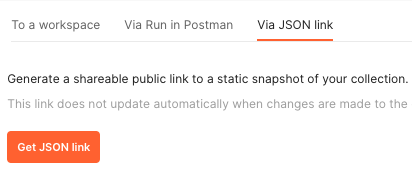
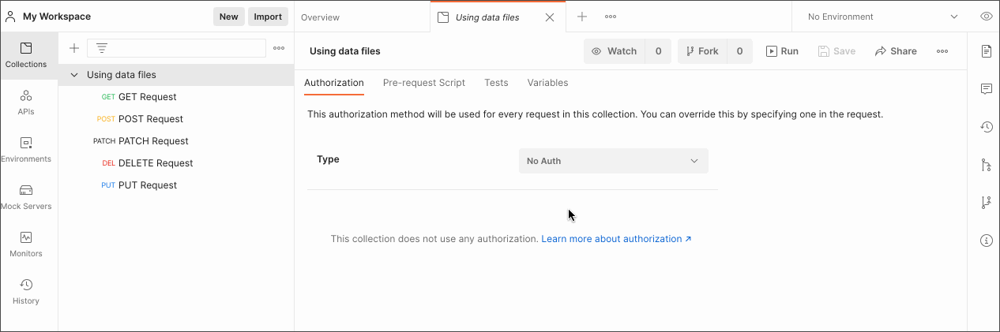
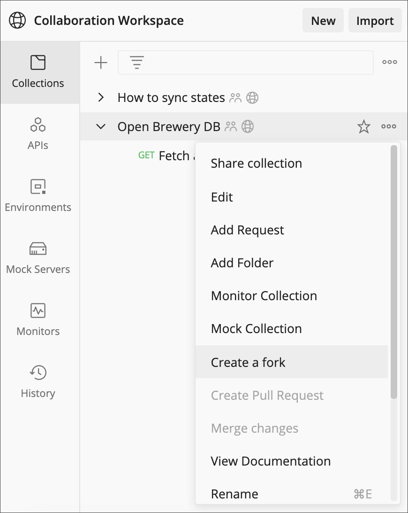
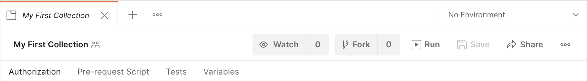
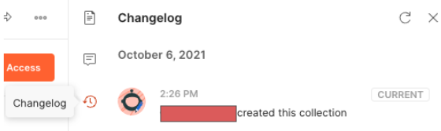
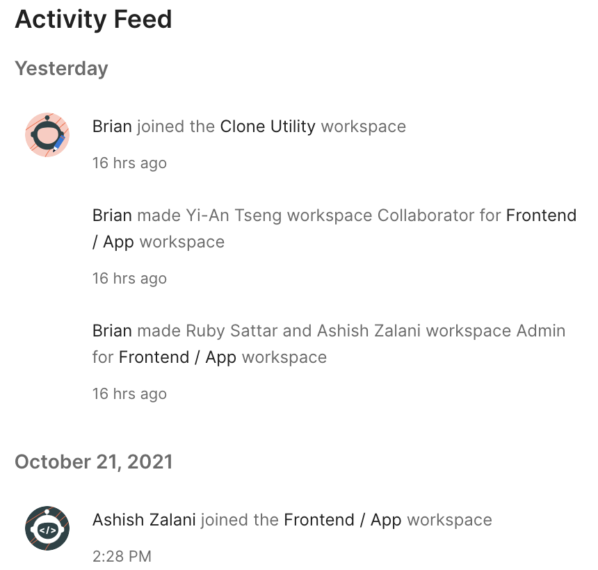

Collaboration with your Team in Postman
Postman enables you to collaborate across your organization or across the world. The collaborative nature of Postman ensures that communication throughout API development never has to be a hurdle when forking, merging, writing documentation, making pull requests, and asking for feedback on changes for example.
Select the arrow on the bottom right of this slide to continue to the topics covered in this learning path.
Workspaces
There are many different ways to collaborate within Postman. To begin, let's review some key concepts about workspaces.
Workspaces allow users to group related APIs, collections, environments, mocks, and monitors. There are four levels of visibility in workspaces.
- Public - These workspaces enable collaboration on elements with anyone across the world. More info in this video. (10 minutes)
- Team - These workspaces enable access to be shared and managed with a team. More info in this video. (11 minutes)
- Personal - These workspaces are visible only to you.
- Private - Business and Enterprise users can limit visibility of this workspace to invited members.
Other Ways to Share
In addition to sharing to workspaces, elements can be shared via embedding or public JSON link.
Be advised that anyone on the internet can see collection information when sharing with a public JSON link, not just those with collection access. This can be managed by /Team Admins and Community Managers using the Public Link Management feature. You can find more information about this in our docs.
Commenting
Commenting allows teams to collaborate live while working on APIs in Postman. There are several ways to comment on various components within collections. Find more information about commenting in this documentation.
Version Control
There are a variety of utilities available within Postman to enable users to version control collections and APIs.
We can logically divide these utilities into three functions:
- Change-Management
- Change-Notification
- Change-Recording
Change-Management
Our change-management utilities allow users to fork, merge, see differences, and submit pull requests. Developer teams use these processes to work together on the same projects.
Check out Joyce walking through the previously mentioned steps in this 2-minute video.
Change-Notification
The watch option allows you to receive an email/in-app notification when one of your team member belonging to the same workspace modifies the collection. If you watch a collection, you will be notified of actions such as adding a new request, modifying the existing requests, adding or updating variables, editing pre-request scripts or tests, adding or deleting a folder and so on.
Find more information about change notifications here.
Change-Recording
Changes are recorded in the Postman changelog.
The changelog is located on the far right of the Postman application when a collection or API version is selected. The changelog for a workspace is known as History and can be found on the far left. You can find it by selecting the clock symbol. 
Another place to find changes recorded is the "Activity Feed" section of the workspace home page.
Knowledge Check!
Name one way a developer can collaborate within Postman and how that process affects productivity.
When you feel you can answer the question above, feel free to explore our Collaboration mini course, under "Bootcamp", which can be found on the bottom right of the application once you've entered any workspace.
Got about 40 minutes and need a refresher or just prefer absorbing the material in this learning path differently? Watch Kin, Nick, and Joyce demo what collaboration on a team can look like in Postman here.
Click here to go back to the top of this learning path.